Feature Engineering for Energy Forecasting#
Energy load follows strong daily and weekly patterns driven by human behaviour, weather, and calendar effects. Raw time series alone don’t expose these patterns to a model — feature engineering makes them explicit.
OpenSTEF provides a library of transforms organized into five groups:
Group |
Transforms |
Purpose |
|---|---|---|
Time Domain |
|
Encode temporal patterns |
Weather Domain |
|
Derive meteorological features |
Energy Domain |
|
Power curve estimation |
General |
|
Data cleaning & normalization |
Validation |
|
Data quality gates |
Postprocessing |
|
Forecast output refinement |
This tutorial demonstrates each group with real data, explains why each transform matters for energy forecasting, and shows how to build your own.
See also
Building a Custom Pipeline — full end-to-end custom model assembly
Forecasting Quickstart — standard approach using presets
Quantile Calibration — deep-dive into postprocessing calibration
Load sample data#
We use 30 days of real Dutch MV-feeder load data from March 2024. This period includes the spring equinox (rapidly changing daylight hours) and Easter (March 29-31), making it ideal for demonstrating calendar and daylight features.
from datetime import datetime, timedelta
import numpy as np
import pandas as pd
import plotly.graph_objects as go
from plotly.subplots import make_subplots
from openstef_core.datasets import TimeSeriesDataset
from openstef_core.testing import load_liander_dataset
from openstef_core.types import LeadTime
LOAD_LABEL = "Load (W)"
MODE_LINES_MARKERS = "lines+markers"
dataset = load_liander_dataset()
# March 2024: spring equinox + Easter
start = datetime.fromisoformat("2024-03-01T00:00:00Z")
end = start + timedelta(days=30)
sample = dataset.filter_by_range(start=start, end=end)
print(f"Dataset: {sample.data.shape[0]:,} rows x {sample.data.shape[1]} columns")
print(f"Period: {sample.data.index[0]} → {sample.data.index[-1]}")
print(f"Sample interval: {sample.sample_interval}")
Dataset: 2,880 rows x 28 columns
Period: 2024-03-01 00:00:00+00:00 → 2024-03-30 23:45:00+00:00
Sample interval: 0:15:00
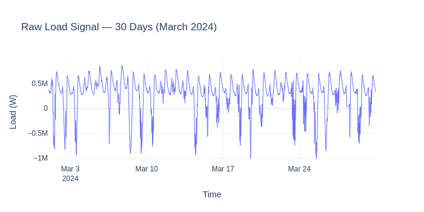
1. Time Domain Transforms#
These transforms encode temporal patterns that drive energy consumption.
CyclicFeaturesAdder#
What: Encodes hour-of-day, day-of-week, month, and season as sine/cosine pairs.
Why for energy forecasting: Energy demand has strong 24-hour and 7-day periodicity. Sine/cosine encoding makes the periodicity smooth and continuous — hour 23 is naturally close to hour 0. This helps both tree-based and linear models capture daily patterns with fewer parameters.
from openstef_models.transforms.time_domain import CyclicFeaturesAdder
cyclic = CyclicFeaturesAdder()
result = cyclic.transform(sample)
cyclic_cols = cyclic.features_added()
print(f"Added {len(cyclic_cols)} columns: {cyclic_cols}")
Added 8 columns: ['time_of_day_sine', 'season_sine', 'day_of_week_sine', 'month_sine', 'time_of_day_cosine', 'season_cosine', 'day_of_week_cosine', 'month_cosine']
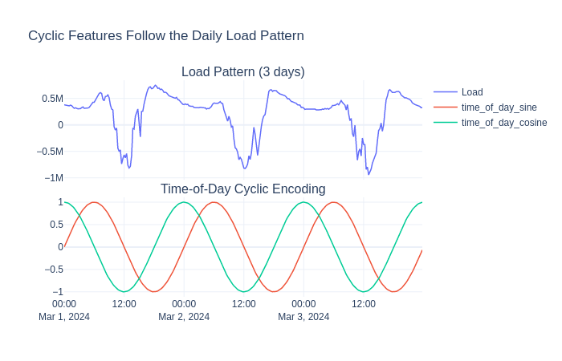
The sine/cosine curves align with the load’s daily rhythm — they peak and trough in sync with demand, giving the model a smooth “where in the day” signal.
HolidayFeatureAdder#
What: Adds binary flags for national holidays, school holidays, and bridge days.
Why for energy forecasting: On public holidays, industrial and commercial load disappears - demand can drop 20-40% below a normal weekday. Without explicit holiday features, the model would treat Good Friday as a regular Friday and overpredict.
from openstef_models.transforms.time_domain import HolidayFeatureAdder
holidays = HolidayFeatureAdder(country_code="NL")
result = holidays.transform(sample)
holiday_cols = holidays.features_added()
print(f"Added {len(holiday_cols)} columns: {holiday_cols}")
Added 12 columns: ['is_holiday', 'is_ascension_day', 'is_christmas_day', 'is_easter_monday', 'is_easter_sunday', 'is_good_friday', 'is_king_s_day', 'is_liberation_day', 'is_new_year_s_day', 'is_second_day_of_christmas', 'is_whit_monday', 'is_whit_sunday']
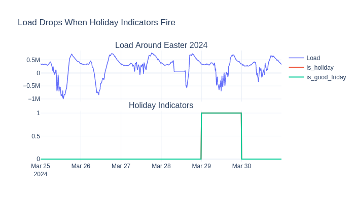
LagsAdder#
What: Creates time-shifted copies of the target column (e.g., “load 7 days ago”).
Why for energy forecasting: Energy demand is highly auto-correlated —
last Monday’s load is the best predictor of this Monday’s load. The key
constraint: lags must respect the forecast horizon. If you’re forecasting
36 hours ahead, you can’t use data from 24 hours ago. OpenSTEF’s LagsAdder
automatically selects valid lags for each horizon.
from openstef_models.transforms.time_domain.lags_adder import LagsAdder
horizons = [LeadTime.from_string("PT36H")]
lags = LagsAdder(
history_available=timedelta(days=14),
horizons=horizons,
add_trivial_lags=False,
target_column="load",
custom_lags=[timedelta(days=7)],
lag_fallback_offset=timedelta(days=7),
)
result = lags.transform(sample)
lag_cols = lags.features_added()
print(f"Added {len(lag_cols)} lag columns: {lag_cols[:5]}")
Added 1 lag columns: ['load_lag_P7D']
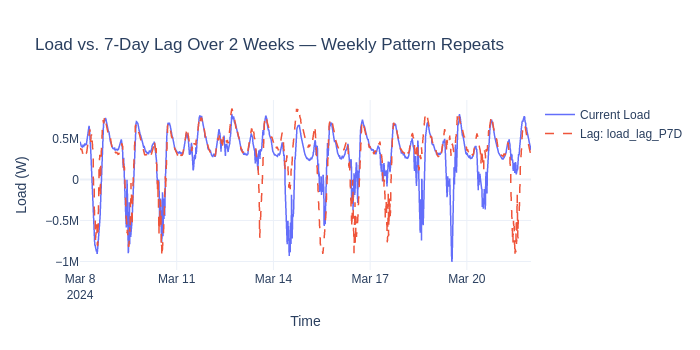
RollingAggregatesAdder#
What: Computes rolling statistics (mean, median, min, max) over a configurable window.
Why for energy forecasting: A 24-hour rolling mean captures the slow-moving “baseline demand” level, filtering out intra-day noise. This helps the model detect gradual shifts (e.g., temperature-driven HVAC ramp-ups).
from openstef_models.transforms.time_domain import RollingAggregatesAdder
rolling = RollingAggregatesAdder(
feature="load",
rolling_window_size=timedelta(hours=24),
aggregation_functions=["mean", "max"],
horizons=horizons,
)
rolling.fit(sample)
result = rolling.transform(sample)
rolling_cols = rolling.features_added()
print(f"Added: {rolling_cols}")
Added: ['rolling_mean_load_P1D', 'rolling_max_load_P1D']
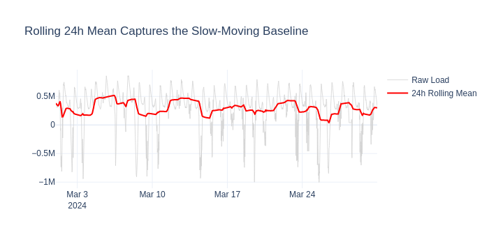
DatetimeFeaturesAdder#
What: Extracts integer components (hour, day-of-week, month, etc.).
Why for energy forecasting: Datetime integers give tree models sharp split boundaries — e.g., “if hour >= 17 and hour <= 20 → evening peak.” Highly effective for XGBoost/LightGBM.
from openstef_models.transforms.time_domain import DatetimeFeaturesAdder
dt_features = DatetimeFeaturesAdder()
result = dt_features.transform(sample)
dt_cols = dt_features.features_added()
print(f"Added {len(dt_cols)} columns: {dt_cols}")
result.data[dt_cols].head(8)
Added 5 columns: ['is_week_day', 'is_weekend_day', 'is_sunday', 'month_of_year', 'quarter_of_year']
| is_week_day | is_weekend_day | is_sunday | month_of_year | quarter_of_year | |
|---|---|---|---|---|---|
| timestamp | |||||
| 2024-03-01 00:00:00+00:00 | 1 | 0 | 0 | 3 | 1 |
| 2024-03-01 00:15:00+00:00 | 1 | 0 | 0 | 3 | 1 |
| 2024-03-01 00:30:00+00:00 | 1 | 0 | 0 | 3 | 1 |
| 2024-03-01 00:45:00+00:00 | 1 | 0 | 0 | 3 | 1 |
| 2024-03-01 01:00:00+00:00 | 1 | 0 | 0 | 3 | 1 |
| 2024-03-01 01:15:00+00:00 | 1 | 0 | 0 | 3 | 1 |
| 2024-03-01 01:30:00+00:00 | 1 | 0 | 0 | 3 | 1 |
| 2024-03-01 01:45:00+00:00 | 1 | 0 | 0 | 3 | 1 |
VersionedLagsAdder#
What: Adds lags from a VersionedTimeSeriesDataset — data where each row
has an available_at timestamp indicating when that observation became known.
Why for energy forecasting: Weather forecasts are versioned: the forecast
for Monday issued on Saturday differs from the one issued on Sunday. Standard
lags ignore this — VersionedLagsAdder correctly uses only data that was
actually available at prediction time, preventing data leakage.
from openstef_core.datasets import VersionedTimeSeriesDataset
from openstef_models.transforms.time_domain.versioned_lags_adder import VersionedLagsAdder
# Synthetic example: hourly temperature forecasts with availability tracking
index = pd.date_range("2024-03-01", periods=24, freq="1h", tz="UTC")
synth_data = pd.DataFrame(
{
"temperature_forecast": np.sin(np.linspace(0, 2 * np.pi, 24)) * 5 + 10,
"available_at": index - pd.Timedelta(hours=6), # available 6h before valid time
},
index=index,
)
versioned_ds = VersionedTimeSeriesDataset.from_dataframe(synth_data, timedelta(hours=1))
versioned_lags = VersionedLagsAdder(
feature="temperature_forecast",
lags=[timedelta(hours=-2), timedelta(hours=-6)],
)
result_v = versioned_lags.transform(versioned_ds)
snapshot = result_v.select_version()
lag_features = [c for c in snapshot.feature_names if "lag" in c]
print(f"Added lag features: {lag_features}")
Added lag features: ['temperature_forecast_lag_-PT2H', 'temperature_forecast_lag_-PT6H']
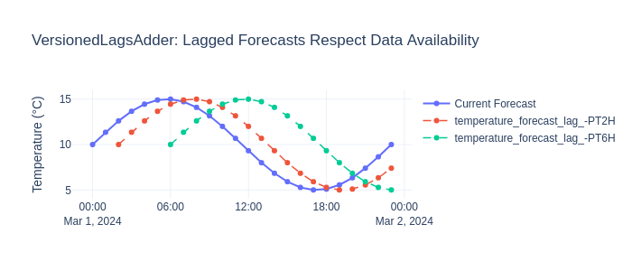
2. Weather Domain Transforms#
DaylightFeatureAdder#
What: Computes sunrise, sunset, and daylight duration from coordinates.
Why for energy forecasting: Daylight drives lighting demand and PV output. In spring, daylight changes ~3 min/day — a meaningful trend even within a month.
from openstef_models.transforms.weather_domain import DaylightFeatureAdder
daylight = DaylightFeatureAdder(coordinate=(52.0, 5.9))
result = daylight.transform(sample)
daylight_cols = daylight.features_added()
print(f"Added: {daylight_cols}")
Added: ['daylight_continuous']
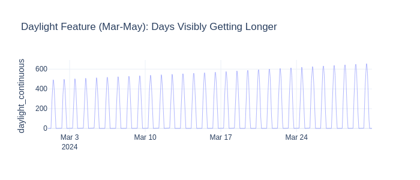
AtmosphereDerivedFeaturesAdder#
What: Computes dewpoint, vapour pressure, and air density from temperature, pressure, and humidity.
Why for energy forecasting:
Dewpoint → discomfort threshold → HVAC demand
Air density → affects wind turbine output
Vapour pressure → humidity signal for HVAC & PV efficiency
from openstef_models.transforms.weather_domain import AtmosphereDerivedFeaturesAdder
atmosphere = AtmosphereDerivedFeaturesAdder(
included_features=["dewpoint", "air_density", "vapour_pressure"],
temperature_column="temperature_2m",
pressure_column="surface_pressure",
relative_humidity_column="relative_humidity_2m",
)
result = atmosphere.transform(sample)
atmo_cols = atmosphere.features_added()
print(f"Added: {atmo_cols}")
result.data[atmo_cols].describe().loc[["mean", "std", "min", "max"]]
Added: ['dewpoint', 'air_density', 'vapour_pressure']
| dewpoint | air_density | vapour_pressure | |
|---|---|---|---|
| mean | 4.910169 | 1.244802 | 88125.625000 |
| std | 2.750122 | 0.020315 | 16598.488281 |
| min | -2.756500 | 1.193168 | 49929.972656 |
| max | 11.743501 | 1.306328 | 137914.062500 |
RadiationDerivedFeaturesAdder#
What: Computes Direct Normal Irradiance (DNI) and Global Tilted Irradiance (GTI) from horizontal radiation using solar geometry.
Why for energy forecasting: PV panels are tilted, not horizontal. GTI on a 34° south-facing panel is what actually drives generation — 20-40% higher than horizontal in winter.
from pydantic_extra_types.coordinate import Coordinate, Latitude, Longitude
from openstef_models.transforms.weather_domain import RadiationDerivedFeaturesAdder
radiation = RadiationDerivedFeaturesAdder(
coordinate=Coordinate(latitude=Latitude(52.0), longitude=Longitude(5.9)),
included_features=["dni", "gti"],
surface_tilt=34.0,
surface_azimuth=180.0,
radiation_column="shortwave_radiation",
)
result = radiation.transform(sample)
rad_cols = radiation.features_added()
print(f"Added: {rad_cols}")
Added: ['dni', 'gti']
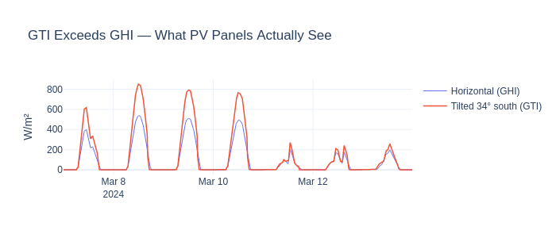
3. Energy Domain Transforms#
WindPowerFeatureAdder#
What: Extrapolates wind speed to hub height, then estimates power via a sigmoid power curve.
Why for energy forecasting: Wind speed at 10m doesn’t map linearly to turbine output. The relationship is a sigmoid (cut-in → rated → cut-out). This transform encodes that physics directly.
from openstef_models.transforms.energy_domain import WindPowerFeatureAdder
wind = WindPowerFeatureAdder(
windspeed_reference_column="wind_speed_10m",
reference_height=10.0,
hub_height=100.0,
)
result = wind.transform(sample)
wind_cols = wind.features_added()
print(f"Added: {wind_cols}")
Added: ['wind_power']
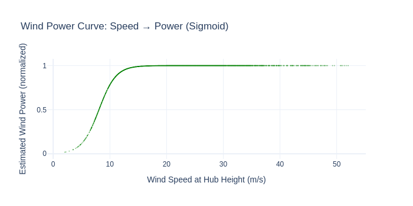
4. General Transforms (Data Cleaning & Preparation)#
Imputer#
What: Fills missing values (mean, median, forward-fill, etc.).
Why: Sensor failures create gaps. Models can’t train on NaN. The Imputer
fills feature gaps while preserving the target column unchanged.
from openstef_models.transforms.general import Imputer
from openstef_models.utils.feature_selection import Exclude
imputer = Imputer(selection=Exclude("load"), imputation_strategy="mean")
# Simulate 2% missing data
noisy = sample.data.copy()
rng = np.random.default_rng(42)
mask = rng.random(noisy.shape) < 0.02
noisy[mask] = np.nan
noisy_ds = TimeSeriesDataset(data=noisy, sample_interval=sample.sample_interval)
result = imputer.fit_transform(noisy_ds)
print("NaN count per column:")
nan_comparison = pd.DataFrame({"before": noisy_ds.data.isna().sum(), "after": result.data.isna().sum()})
print(nan_comparison[nan_comparison["before"] > 0].to_string())
NaN count per column:
before after
load 53 53
temperature_2m 54 0
relative_humidity_2m 59 0
surface_pressure 49 0
cloud_cover 37 0
wind_speed_10m 61 0
wind_speed_80m 52 0
wind_direction_10m 51 0
shortwave_radiation 63 0
direct_radiation 55 0
diffuse_radiation 45 0
direct_normal_irradiance 48 0
EPEX_NL 69 0
E1A_AZI_A 59 0
E1A_AMI_A 61 0
E1B_AZI_A 53 0
E1B_AMI_A 62 0
E1C_AZI_A 71 0
E1C_AMI_A 55 0
E2A_AZI_A 70 0
E2A_AMI_A 53 0
E2B_AZI_A 58 0
E2B_AMI_A 58 0
E3A_A 54 0
E3B_A 68 1
E3C_A 60 0
E3D_A 47 0
E4A_A 64 0
Scaler#
What: Standardizes features to zero mean / unit variance.
Why: Features on different scales (temperature 0-16 °C vs radiation 0-633 W/m²) need normalization for neural networks and fair regularization.
from openstef_models.transforms.general import Scaler
scaler = Scaler(selection=Exclude("load"), method="standard")
result = scaler.fit_transform(sample)
weather_cols = ["temperature_2m", "shortwave_radiation", "wind_speed_10m"]
print("Before scaling (mean, std):")
print(sample.data[weather_cols].agg(["mean", "std"]).round(2).to_string())
print("\nAfter scaling (mean ≈ 0, std ≈ 1):")
print(result.data[weather_cols].agg(["mean", "std"]).round(2).to_string())
Before scaling (mean, std):
temperature_2m shortwave_radiation wind_speed_10m
mean 7.87 96.449997 15.75
std 2.91 141.240005 6.43
After scaling (mean ≈ 0, std ≈ 1):
temperature_2m shortwave_radiation wind_speed_10m
mean 0.0 -0.0 0.0
std 1.0 1.0 1.0
OutlierHandler#
What: Learns feature bounds during training; clips or NaN-masks outliers.
Why: Sensor glitches produce impossible values (temperature 100°C). Outliers distort tree splits and scaling. This enforces plausible ranges.
from openstef_models.transforms.general import OutlierHandler
from openstef_models.utils.feature_selection import Include
outlier = OutlierHandler(
selection=Include("temperature_2m", "wind_speed_10m"),
mode="standard",
n_std=3.0,
outlier_action="clip",
)
outlier.fit(sample)
# Inject outliers
outlier_data = sample.data.copy()
outlier_data.iloc[100, outlier_data.columns.get_loc("temperature_2m")] = 50.0
outlier_data.iloc[200, outlier_data.columns.get_loc("wind_speed_10m")] = 100.0
outlier_ds = TimeSeriesDataset(data=outlier_data, sample_interval=sample.sample_interval)
result = outlier.transform(outlier_ds)
print(f"Temperature 50°C → clipped to {result.data['temperature_2m'].iloc[100]:.1f}°C")
print(f"Wind speed 100 m/s → clipped to {result.data['wind_speed_10m'].iloc[200]:.1f} m/s")
Temperature 50°C → clipped to 16.6°C
Wind speed 100 m/s → clipped to 35.1 m/s
SampleWeighter#
What: Assigns higher weights to peak-load samples during training.
Why: Peak load forecast errors are costlier (grid congestion, reserve activation). Weighting peaks higher makes the model pay more attention to the periods that matter most operationally.
from openstef_models.transforms.general import SampleWeighter
from openstef_models.transforms.general.sample_weighter import SampleWeightConfig
# Compare two weighting methods
weighter_exp = SampleWeighter(config=SampleWeightConfig(method="exponential"))
weighter_inv = SampleWeighter(config=SampleWeightConfig(method="inverse_frequency"))
result_exp = weighter_exp.fit_transform(sample)
result_inv = weighter_inv.fit_transform(sample)
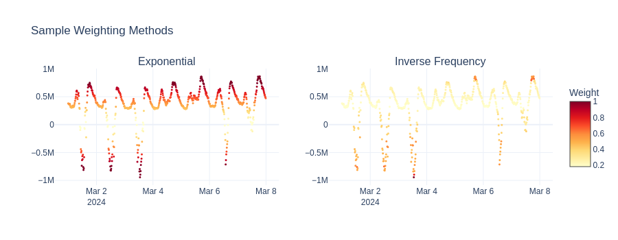
Other general transforms#
Transform |
What it does |
API Reference |
|---|---|---|
|
Keeps only specified columns |
|
|
Aligns aggregation intervals |
|
|
PCA / ICA on feature subsets |
|
|
Drops all-NaN columns |
|
|
Drops rows with NaN |
|
|
Binary flags for out-of-range values |
|
from openstef_models.transforms.general import Selector
selector = Selector(selection=Include("load", "temperature_2m", "wind_speed_10m"))
selector.fit(sample)
result = selector.transform(sample)
print(f"Selected {result.data.shape[1]} of {sample.data.shape[1]} columns: {result.data.columns.tolist()}")
Selected 3 of 28 columns: ['load', 'temperature_2m', 'wind_speed_10m']
5. Validation Transforms#
Validation transforms check data quality and raise exceptions on bad data. Use them at the start of a pipeline to fail fast.
CompletenessChecker#
What: Raises InsufficientlyCompleteError if too many values are missing.
Why: Training on heavily incomplete data produces unreliable models.
from openstef_core.exceptions import (
FlatlinerDetectedError,
InsufficientlyCompleteError,
MissingColumnsError,
)
from openstef_models.transforms.validation import CompletenessChecker
checker = CompletenessChecker(columns=["load", "temperature_2m"], completeness_threshold=0.8)
# Good data passes
checker.transform(sample)
print("✓ Complete data passes (threshold=0.8)")
# Incomplete data fails
sparse = sample.data.copy()
sparse.iloc[:2000, sparse.columns.get_loc("temperature_2m")] = np.nan
sparse_ds = TimeSeriesDataset(data=sparse, sample_interval=sample.sample_interval)
try:
checker.transform(sparse_ds)
except InsufficientlyCompleteError as e:
print(f"✗ Rejected: {type(e).__name__}")
✓ Complete data passes (threshold=0.8)
✗ Rejected: InsufficientlyCompleteError
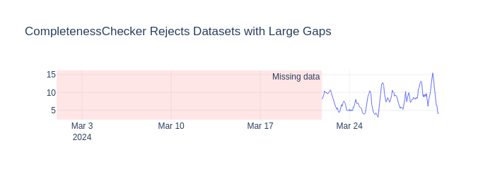
FlatlineChecker#
What: Detects constant-value periods (stuck sensors) and raises
FlatlinerDetectedError.
Why: A meter stuck at one value for hours is broken. Training on flatlines teaches the model that constant load is normal → bad forecasts.
from openstef_models.transforms.validation import FlatlineChecker
flatliner = FlatlineChecker(
load_column="load",
flatliner_threshold=timedelta(hours=6),
detect_non_zero_flatliner=True,
)
# Normal data passes
flatliner.transform(sample)
print("✓ Normal data passes")
# Inject a 12-hour flatline at end
flat_data = sample.data.copy()
flat_data.iloc[-48:, flat_data.columns.get_loc("load")] = 300000.0
flat_ds = TimeSeriesDataset(data=flat_data, sample_interval=sample.sample_interval)
try:
flatliner.transform(flat_ds)
except FlatlinerDetectedError as e:
print(f"✗ Caught: {type(e).__name__}")
✓ Normal data passes
✗ Caught: FlatlinerDetectedError
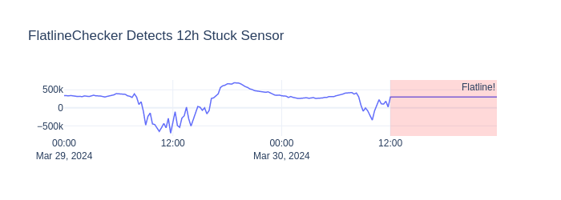
InputConsistencyChecker#
What: Learns expected columns during fit(), raises error on schema drift.
Why: If a weather source stops providing a column between training and prediction, this catches it before the model produces garbage.
from openstef_models.transforms.validation import InputConsistencyChecker
consistency = InputConsistencyChecker()
consistency.fit(sample)
consistency.transform(sample)
print("✓ Consistent input passes")
# Missing column → caught
reduced = sample.data.drop(columns=["wind_speed_10m"])
reduced_ds = TimeSeriesDataset(data=reduced, sample_interval=sample.sample_interval)
try:
consistency.transform(reduced_ds)
except MissingColumnsError as e:
print(f"✗ Caught: {type(e).__name__} - columns changed")
✓ Consistent input passes
✗ Caught: MissingColumnsError - columns changed
6. Postprocessing Transforms#
These operate on ForecastDataset (after
prediction), not training data. They refine model outputs:
Transform |
What it does |
API Reference |
|---|---|---|
|
Adds prediction intervals from quantile residuals |
|
|
Calibrates quantiles via isotonic regression |
|
|
Ensures q10 ≤ q50 ≤ q90 |
|
See Quantile Calibration for a full walkthrough. Conceptual usage:
from openstef_core.mixins import TransformPipeline
from openstef_models.transforms.postprocessing import (
ConfidenceIntervalApplicator, QuantileSorter,
)
postprocess = TransformPipeline(transforms=[
ConfidenceIntervalApplicator(quantiles=[0.1, 0.5, 0.9]),
QuantileSorter(),
])
calibrated = postprocess.fit_transform(forecast_dataset)
7. Building Your Own Transform#
All transforms implement TimeSeriesTransform:
fit(data)— learn parameters (optional for stateless transforms)transform(data)— apply transformationis_fitted— whetherfit()was called
Compose into a TransformPipeline
for use in any OpenSTEF workflow.
from typing import override
from pydantic import Field
from openstef_core.base_model import BaseConfig
from openstef_core.transforms import TimeSeriesTransform
class RateOfChangeAdder(BaseConfig, TimeSeriesTransform):
"""Adds rate-of-change (first derivative) as a new column."""
feature: str = Field(default="load")
window: int = Field(default=4, description="Periods for differencing.")
@property
@override
def is_fitted(self) -> bool:
return True # Stateless
@override
def features_added(self) -> list[str]:
return [f"{self.feature}_roc"]
@override
def fit(self, data: TimeSeriesDataset) -> None:
pass # Stateless transform — no parameters to learn
@override
def transform(self, data: TimeSeriesDataset) -> TimeSeriesDataset:
df = data.data.copy()
df[f"{self.feature}_roc"] = df[self.feature].diff(self.window)
return TimeSeriesDataset(data=df, sample_interval=data.sample_interval)
roc = RateOfChangeAdder(feature="load", window=4)
result = roc.transform(sample)
print(f"Large ramps (|roc| > 200kW): {(result.data['load_roc'].abs() > 200000).sum()} timestamps")
Large ramps (|roc| > 200kW): 547 timestamps
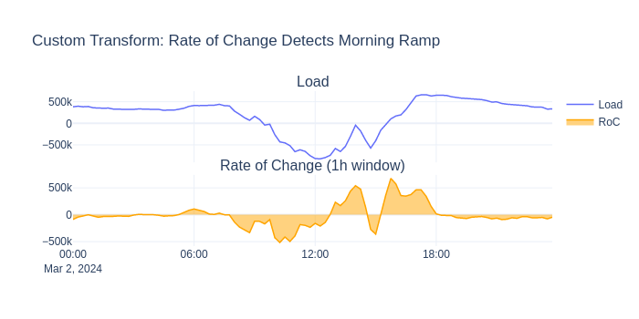
8. Composing a Full Pipeline#
Order matters: validation → features → cleaning for preprocessing. Postprocessing operates on forecasts and refines model outputs.
Preprocessing pipeline#
from openstef_core.mixins import TransformPipeline
preprocessing = TransformPipeline(
transforms=[
# 1. Validation
CompletenessChecker(completeness_threshold=0.5),
# 2. Feature engineering
CyclicFeaturesAdder(),
HolidayFeatureAdder(country_code="NL"),
DatetimeFeaturesAdder(),
DaylightFeatureAdder(coordinate=(52.0, 5.9)),
LagsAdder(
history_available=timedelta(days=14),
horizons=horizons,
add_trivial_lags=False,
target_column="load",
custom_lags=[timedelta(days=7)],
lag_fallback_offset=timedelta(days=7),
),
WindPowerFeatureAdder(windspeed_reference_column="wind_speed_10m"),
RateOfChangeAdder(feature="load"),
# 3. Data cleaning
Imputer(selection=Exclude("load"), imputation_strategy="mean"),
Scaler(selection=Exclude("load"), method="standard"),
]
)
result = preprocessing.fit_transform(sample)
print(
f"Input: {sample.data.shape[1]} cols → Output: {result.data.shape[1]} cols (+{result.data.shape[1] - sample.data.shape[1]} features)"
)
Input: 28 cols → Output: 58 cols (+30 features)
Postprocessing pipeline#
After prediction, postprocessing transforms refine model outputs (e.g.,
prediction intervals, quantile sorting). These operate on
ForecastDataset.
# Fit CI applicator on "validation" data, then add quantile bands
quantiles = [Quantile(0.1), Quantile(0.5), Quantile(0.9)]
postprocessing = TransformPipeline(
transforms=[
ConfidenceIntervalApplicator(quantiles=quantiles),
QuantileSorter(),
]
)
calibrated = postprocessing.fit_transform(forecast_dataset)
print(f"Forecast columns: {list(calibrated.data.columns)}")
print(calibrated.data[["quantile_P10", "quantile_P50", "quantile_P90"]].head())
Forecast columns: ['quantile_P50', 'load', 'stdev', 'quantile_P10', 'quantile_P90']
quantile_P10 quantile_P50 quantile_P90
timestamp
2024-03-29 00:00:00+00:00 339999.956363 340000.015236 340000.074108
2024-03-29 00:15:00+00:00 333333.222462 333333.281334 333333.340207
2024-03-29 00:30:00+00:00 333333.311983 333333.370856 333333.429728
2024-03-29 00:45:00+00:00 339999.988156 340000.047028 340000.105901
2024-03-29 01:00:00+00:00 326666.502575 326666.569115 326666.635655
Summary#
Group |
Transform |
Energy forecasting benefit |
API |
|---|---|---|---|
Time |
|
Smooth daily/weekly encoding |
|
Time |
|
Avoids overprediction on holidays |
|
Time |
|
“Last Monday” predicts “this Monday” |
|
Time |
|
Captures baseline trends |
|
Time |
|
Sharp tree splits on peak hours |
|
Time |
|
Respects data availability for weather lags |
|
Weather |
|
Seasonal lighting & solar trends |
|
Weather |
|
Humidity/density signals |
|
Weather |
|
Tilted irradiance = PV input |
|
Energy |
|
Non-linear power curve |
|
General |
|
Handles missing data |
|
General |
|
Normalizes feature scales |
|
General |
|
Enforces plausible ranges |
|
General |
|
Emphasizes peak loads |
|
Validation |
|
Rejects incomplete data |
|
Validation |
|
Catches stuck sensors |
|
Validation |
|
Guards schema drift |
|
Postprocessing |
|
Valid prediction intervals |
|
See also
TransformPipeline— composing transformsTimeSeriesTransform— base classBuilding a Custom Pipeline — transforms in a full forecasting model
Quantile Calibration — postprocessing deep-dive